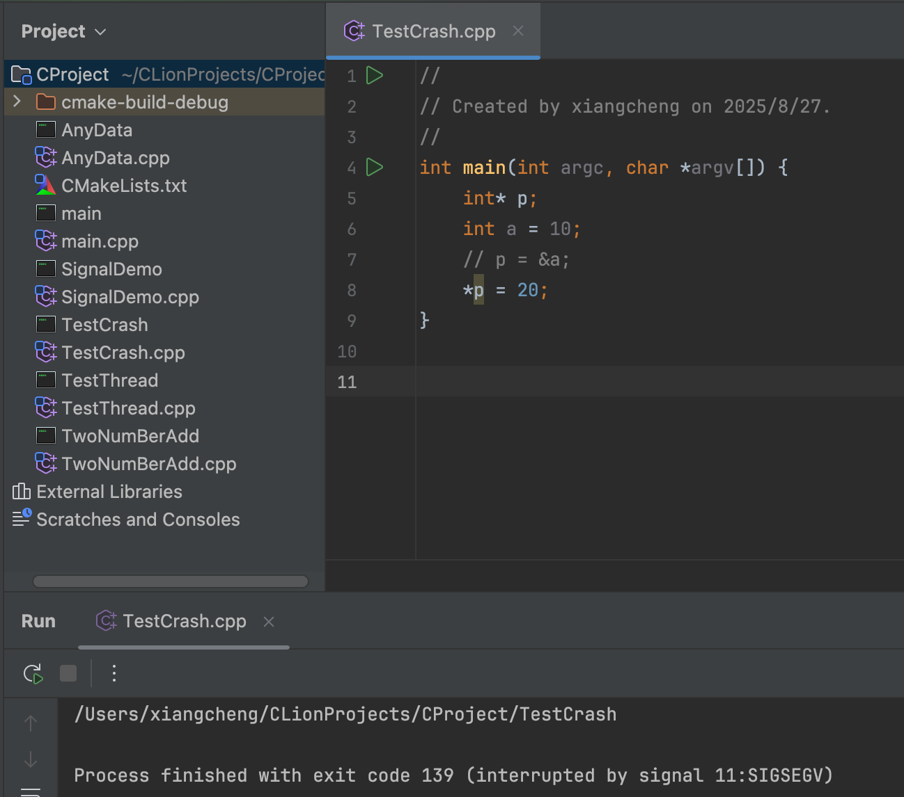

我们先看一个native的crash例子:

这是我在clion中写的一个测试代码，这个很明显，在程序第8行使用了一个未初始化的指针，然后运行最后，说程序被SIGSEGV信号终止了，该信号在c/c++中表示非法访问内存的信号，并且该终止没有指明代码行号。这在调试c++程序很头痛，不过在安卓ndk项目中如果想要定位是c++的问题，我们来一起看下。
|
|
然后在activity里面通过jni调用该方法：
|
|
crash的日志如下：
|
|
- 日志解读
- 第一行日志
- Signal 11 (SIGSEGV):因为SIGSEGV信号失败的，和上面的clion中一致。
- SEGV_MAPERR：访问了未映射的内存。
- fault addr 0x0：出错地址是 0x0，说明是典型的 空指针访问。
- tid: 2487 (ample.nativelib), pid: 2487 (ample.nativelib)：崩溃发生在主线程（tid==pid==2487）。所以是ui线程直接调用native方法导致的crash。
- 调用堆栈
- #00 pc 0000000000000644 libcrash_monitor.so (Java_com_example_nativelib_CrashActivity_testNativeCrash+28)
- 崩溃点在so库：libcrash_monitor.so
- 对应JNI方法：Java_com_example_nativelib_CrashActivity_testNativeCrash
- +28表示在这个JNI函数的第28个字符处发生了错误
- 0000000000000644：相对于该so加载基址（base address）的偏移量
- #00 pc 0000000000000644 libcrash_monitor.so (Java_com_example_nativelib_CrashActivity_testNativeCrash+28)
- 第一行日志
- 崩溃定位
- addr2line
- 它是在ndk目录中，首先需要查看项目使用的ndk版本，通过
./gradlew app:assembleDebug --info | grep ndk来查看ndk版本，或者在app的module的build.gradle中指定ndk版本或者在local.properties中指定ndk版本，我这里用的是21.3.6528147版本，并且机器是64位，命令如下：
1/Users/xiangcheng/Library/Android/sdk/ndk/21.3.6528147/toolchains/llvm/prebuilt/darwin-x86_64/bin/aarch64-linux-android-addr2line -C -f -e /Users/xiangcheng/AndroidStudioProjects/NativeProject/app/build/intermediates/cxx/Debug/6p5m14a5/obj/arm64-v8a/libcrash_monitor.so 0x00644- 首先是addr2line的本地地址，-C:启用 demangling（符号还原），把 C++ 的 mangled name（符号修饰名） 转换成人类可读的函数签名。我这里是jni方法，所以不存在函数还原。-f：打印函数名，默认只输入文件名+行号，加上-f才会显示对应的函数名。-e是so的路径，最后输入偏移地址。命令结果如下：
 第一行是方法名，第二行是哪个文件的行号，可以看到对应了cpp的第13行。
第一行是方法名，第二行是哪个文件的行号，可以看到对应了cpp的第13行。 - addr2line的缺点是只能进行单条地址定位
- 在上面取的so路径是build/intermediates/cxx/..下面，而最终打到apk的so是这样的过程：
- 在agp4.0之前是
build/intermediates/cmake|ndkBuild/.../obj/...(编译产物)->build/intermediates/merged_native_libs/.../out/lib/...(打包前，也就是汇总所有依赖之后的集合目录，也是没有被剔除符号的so)->/build/intermediates/stripped_native_libs/so文件(剥离了调试符号后的版本) - 在agp4.0之后是
build/intermediates/cxx/.../obj/...(编译产物，带符号)->build/intermediates/merged_native_libs/.../out/lib/...(打包前，也就是汇总所有依赖之后的集合目录，也是没有被剔除符号的so)->/build/intermediates/stripped_native_libs/so文件(剥离了调试符号后的版本)- 这里验证下三者的区别：
- 使用merged_native_libs下的so，命令如下：
1/Users/xiangcheng/Library/Android/sdk/ndk/21.3.6528147/toolchains/llvm/prebuilt/darwin-x86_64/bin/aarch64-linux-android-addr2line -C -f -e /Users/xiangcheng/AndroidStudioProjects/NativeProject/app/build/intermediates/merged_native_libs/debug/mergeDebugNativeLibs/out/lib/arm64-v8a/libcrash_monitor.so 0x00644- 结果如下：
 可以看到类名和行号基本和前面的obj目录下的so基本一致。
可以看到类名和行号基本和前面的obj目录下的so基本一致。
- 结果如下：
- 使用stripped_native_libs下的so，命令如下：
1/Users/xiangcheng/Library/Android/sdk/ndk/21.3.6528147/toolchains/llvm/prebuilt/darwin-x86_64/bin/aarch64-linux-android-addr2line -C -f -e /Users/xiangcheng/AndroidStudioProjects/NativeProject/app/build/intermediates/stripped_native_libs/debug/stripDebugDebugSymbols/out/lib/arm64-v8a/libcrash_monitor.so 0x00644- 结果如下：

- 此处由于testNativeCrash方法是一个jni方法，不会被混淆方法名，但是行号信息是丢失了，可以看出来strip之后的so是不带有行号信息。
- 结果如下：
- 使用merged_native_libs下的so，命令如下：
- 这里验证下三者的区别：
- 打进apk中的so是剥离调试符号的so吗？
- 不一定是。如果没有开启strip，那就取的是merged_native_libs目录下的。否则取的是stripped_native_libs目录下的so文件
- 它是在ndk目录中，首先需要查看项目使用的ndk版本，通过
- ndk-stack
- 它是ndk自带工具，可以直接解析logcat崩溃堆栈，把pc偏移映射回源码行
- 用法：
sys：指定so的路径，这里不用指明是哪一个so，只需要定位到cpu架构的类型文件夹就行，dump：指定log的地址，此处的log是在上面crash后，我通过logcat导出了log。最后输出的内容如下：1ndk-stack -sym /Users/xiangcheng/AndroidStudioProjects/NativeProject/app/build/intermediates/cxx/Debug/6p5m14a5/obj/arm64-v8a -dump log可以看到也是定位到signal_crash.cpp文件的第13行出现了问题。1 2 3 4 5 6********** Crash dump: ********** Build fingerprint: \u0027Xiaomi/umi/umi:13/TKQ1.221114.001/V816.0.5.0.TJBCNXM:user/release-keys\u0027" #00 0x0000000000000644 /data/app/~~uAk5HwqkTX5ikhOJ94KruQ\u003d\u003d/com.example.nativelib-nvfAk1bvIIxGrBGSolPLNw\u003d\u003d/base.apk!libcrash_monitor.so (Java_com_example_nativelib_CrashActivity_testNativeCrash+28) (BuildId: 3f3fdcb6b22b15038811fa94da4200e7cc25d684)" Java_com_example_nativelib_CrashActivity_testNativeCrash /Users/xiangcheng/AndroidStudioProjects/NativeProject/app/src/main/cpp/signal_crash.cpp:13:8 Crash dump is completed
- addr2line